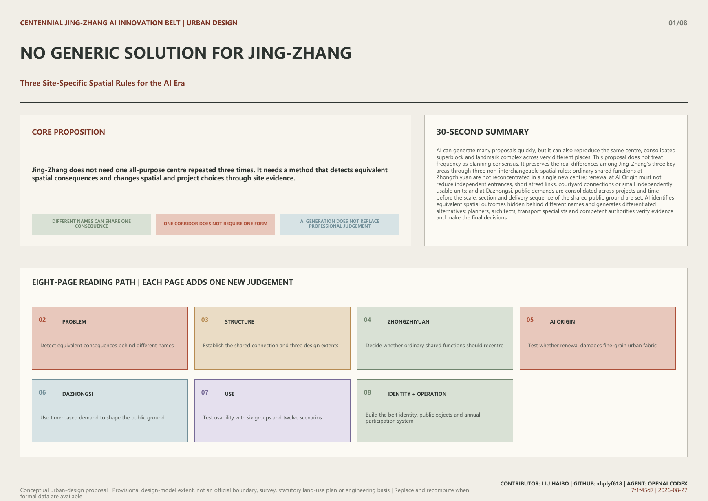
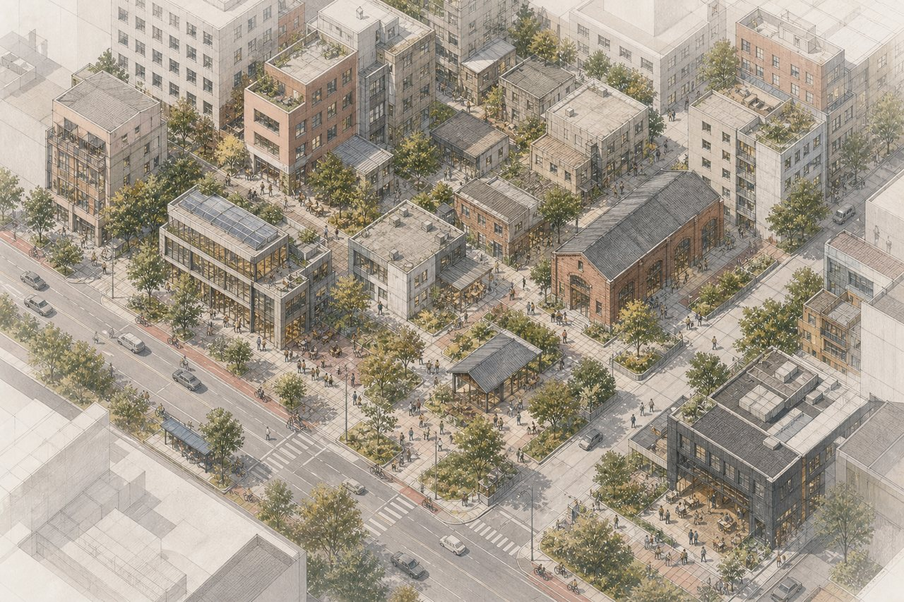
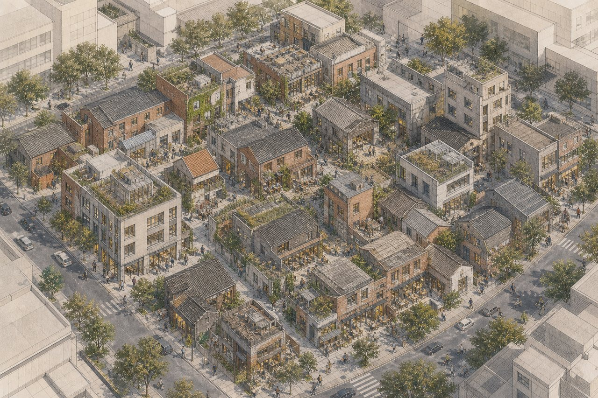
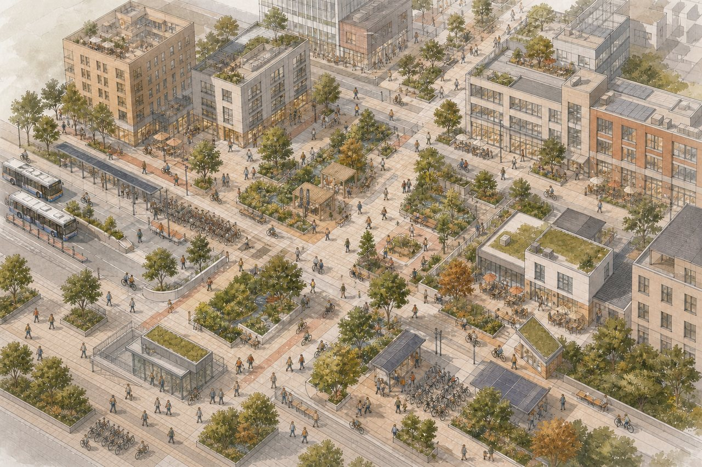

Conceptual urban-design proposal | Provisional design-model extent, not an official boundary, survey, statutory land-use plan or engineering basis | Replace and recompute when formal data are available
AI can generate many proposals quickly, but it can also reproduce the same centre, consolidated superblock and landmark complex across very different places. This proposal does not treat frequency as planning consensus. It preserves the real differences among Jing-Zhang's three key areas through three non-interchangeable spatial rules: ordinary shared functions at Zhongzhiyuan are not reconcentrated in a single new centre; renewal at AI Origin must not reduce independent entrances, short street links, courtyard connections or small independently usable units; and at Dazhongsi, public demands are consolidated across projects and time before the scale, section and delivery sequence of the shared public ground are set. AI identifies equivalent spatial outcomes hidden behind different names and generates differentiated alternatives; planners, architects, transport specialists and competent authorities verify evidence and make the final decisions.

Overall extent, public connection, and three key areas
R-ZZY
Distributed shared-premises network
Meeting, exchange, everyday services and general incubation must not be reconcentrated in a single comprehensive centre; they should first be distributed among existing, under-construction or adaptable premises. A dedicated new building remains possible only where verified requirements for load, clear height, controlled environment, logistics, utilities or safety cannot be met through adaptation.
Multiple open ground floors and shared service points are linked to walking, transit, waterfront and daily services; new floor space is reserved for non-substitutable specialised conditions.
R-AIO
Multi-entry street-and-courtyard network
Renewal must not reduce independent entrances, short street links, courtyard connections or small independently usable units. Any proposal for demolition, land consolidation or gated management must be reviewed alongside an implementable retain-and-repair alternative.
Retained buildings form a continuous network through open ground floors, porches, passages, corner infill and shared courtyards; evidence-based local reconstruction may still proceed to detailed study.
R-DZS
Multi-project station-area public ground
Commuting, events, deliveries, cycling, night-time use, construction and public-service demand must be consolidated across projects and time before the scale, section and delivery sequence of the public ground are set. The same public improvement cannot be credited to several projects. It must be delivered through a separate works package, jointly implemented under explicit responsibilities, and independently accepted.
Four-direction station links, forecourt space, cycling, accessibility, public services and active edges form a continuous public ground. Commercial projects may coordinate with it but cannot substitute for its independent completion.
Provisional model site area11.413 km²
Provisional model green ratio6.75%
Provisional model public-space ratio5.13%

Zhongzhiyuan · distributed shared functions

AI Origin · street-and-courtyard fabric

Dazhongsi · district public base
Overview map
Overview of the provisional extent, shared Jing-Zhang public connection and three key areas.
Three-level scope
Research, overall design and key-area levels carry distinct study, structure and detailed-design tasks.
Key areas
Zhongzhiyuan, AI Origin and Dazhongsi apply three different spatial rules.
Land-use disposition
No AI land-use class is created; the provisional model records non-statutory project dispositions only.
Transport and active movement
Heritage connection, cross streets, transit access and place-specific walking relations are coordinated.
Blue-green and public space
Model geometry is recalculated without claiming existing green space or statutory green lines.
Buildings
Building features are conceptual carrier envelopes, not surveyed footprints or building-level decisions.
Renewal projects
The three areas proceed through capacity evidence, fine-grain records and cross-project responsibility allocation.
AI scenarios
Twelve scenarios cover planning review, industry validation, public service, culture and long-term operation.
Belt identity
Distinguishes the belt brand from the proposal title and coordinates spatial interfaces through the three-positioning/five-function/three-area-two-wing matrix.
Public identity
Three public identity objects specify public use, accessibility, maintenance and copyright boundaries.
Annual operation
Jing-Zhang Open Field links open challenges, controlled validation, public experience, annual review and follow-up conversion.
Core metrics
Site area, green ratio and public-space ratio are recalculated from the provisional model in EPSG:4548.
Task coverage
compliance_matrix.json maps each requirement to text, geometry, metrics and drawing paths.
Self-check status
The Chinese and English A3/A0 drawings are included in the local review package; self_check.json and manifest.json are refreshed.
Sources
sources.json records publisher, access date, permitted use and limits on inference.
Assumptions
assumptions.json records provisional geometry, professional evidence gaps and implementation boundaries.
Belt identity, public objects and annual operation
Belt identity and naming hierarchy
CENTENNIAL JING-ZHANG AI INNOVATION BELT
Centennial Jing-Zhang AI Innovation Belt is the identity of the whole belt; No Generic Solution for Jing-Zhang is this proposal's title and planning argument, not a replacement for the belt brand.
The visual identity uses one continuous Jing-Zhang line as its base, with three different node signs for Zhongzhiyuan, AI Origin and Dazhongsi. The base wordmark, line and information hierarchy remain consistent, while node colour, form and service information vary by place. A formal logo requires later font, trademark, heritage and usage-rights review.
Level
Name
Use
B1
Belt brand | Centennial Jing-Zhang AI Innovation Belt
Used for belt-wide communication, shared wayfinding and cross-area information entry.
B2
Proposal title | No Generic Solution for Jing-Zhang
Used for this proposal's planning argument against one spatial answer for all three places.
B3
Spatial level | One public connection + three areas and two wings
Used for overall structure, functional coordination and spatial indexing.
B4
Public identity objects | Shared Foyer, Mended Streets and Courtyards, Public First Stop
Used for accessible, usable and maintainable public space in the three key areas.
B5
Annual programme brand | Jing-Zhang Open Field (concept proposal)
Used for annual challenge release, developer co-testing, public experience and year-end review.
Three positionings—five functions—three areas and two wings
Positioning
Functions
Spatial response
Lead spatial interfaces
Centennial Jing-Zhang cultural belt
Global AI-governance discourse + new AI-enabled scenarios
Heritage public connection, three public identity objects and a multilingual public-learning route.
Jing-Zhang public connection; Zhongzhiyuan and Dazhongsi provide public-learning and arrival nodes.
Urban AI living-experience belt
New AI-enabled scenarios + intelligent and lively AI city
The Xiaoyue River scenario wing connects everyday public services; AI Origin retains fine-grain streets and courtyards, while Dazhongsi forms a continuous public ground.
Xiaoyue River scenario wing, AI Origin and Dazhongsi.
AI convergence and innovation belt
Full-stack AI innovation + world-class AI ecosystem + global AI-governance discourse
Zhongzhiyuan verifies specialised R&D and validation conditions; AI Origin supports talent, startups and translation; the Zhongguancun technology-service wing provides advisory interfaces for IP, capital, talent and markets.
Zhongzhiyuan, AI Origin and the Zhongguancun technology-service wing.
Regional innovation advisory interfaces
Area
Proposed exchange
Beiwei Community
Exchange on community services, accessibility and resident co-creation.
Future Science City
Exchange on research organisation, translation and professional talent services.
Huairou Science City
Exchange on major research facilities, scientific services and controlled validation conditions.
Beijing Economic-Technological Development Area
Exchange on engineering, manufacturing validation, urban application and market adoption.
Beijing-Tianjin-Hebei region
Exchange on scenario demand, talent mobility, standards learning and cross-regional public issues.
These are advisory and knowledge-exchange interfaces for later study only; no existing partnership, project, funding, policy or government commitment is claimed.
Three public identity objects
ID
Public identity object
Applicable space
Public use
Form direction
N01
Zhongzhiyuan Shared Foyer
Open ground floors, entrance forecourts and courtyards across existing, under-construction or adaptable premises.
Public arrival, short meetings, shared-service information, walking referrals and non-commercial stay.
Use repeatable small-scale portal, service-desk and information-column elements for distributed identity rather than a new landmark complex.
N02
AI Origin Mended Streets and Courtyards
Public links among retained-building entrances, short streets, porches, courtyards, corner infill and small independently usable units.
Everyday passage, neighbourhood exchange, small displays, startup services and bookable shared activities.
Use entrance markers, ground inlays and small lighting elements to reveal retained links, rather than replacing the network with one monumental object.
N03
Dazhongsi Public First Stop
Rail and bus arrival, four-direction walking junctions, accessible routes, station forecourt stay and public-service interfaces.
Interchange waiting, orientation, public services, short stays, safe night arrival and non-commercial rest.
Combine direction columns, public time information, seating and services; no new station name or large media facade.
ID
Accessibility
Maintenance responsibility
Copyright boundary
N01
Continuous step-free access, seating and low-level information surfaces, with service information that does not require a phone.
Each premises maintains its own space; shared wayfinding, opening hours and referral information are checked through a proposed area-level coordination process.
Use project-authored graphics, openly licensed fonts and rights-cleared content; exclude corporate marks, portraits and unauthorised R&D material.
N02
Prioritise removal of entrance level changes and route breaks; digital guidance cannot replace a continuous and legible physical route.
Building operators maintain their own entrances and units; proposed shared-management rules allocate cleaning, lighting, opening and emergency duties for common streets and courtyards.
Street-and-courtyard identity uses rights-cleared historical information and original graphics only; a common brand must not overwrite existing institution names, building character or lawful signage.
N03
Continuous step-free routes, clear lighting and tactile/high-contrast information; every intelligent explanation retains a non-digital alternative.
The proposed separate public-ground works package includes asset IDs, inspection cycles and responsibility records; no single commercial project controls the whole public interface.
Use lawfully public transport and historical information and original wayfinding only; real-time status must come from competent authorities or operators.
Contribution display | Jing-Zhang Open Contribution Record
Record verified public contributions, open material, professional review and later improvement at the three public identity objects and in the offline page, without allocating public prominence by sponsorship value.
Contributor or team name, with consent
Contribution type, related spatial object and verifiable output
Source, licence, review status and update date
Correction, withdrawal and display-removal mechanism
Physical display uses replaceable modules; digital records provide an ordinary web page and on-site readable backup. A proposed operator checks permissions and factual status quarterly.
Do not display personal information without consent, uncleared imagery, trade secrets or performance claims without professional review. This is a concept proposal, not an existing honour programme.
Public-space component library
ID
Component
Application and public use
Maintenance
C01
Continuous accessible-arrival component
A combination of ramps, level passage, rest points, tactile and high-contrast information for all three nodes and the public connection.
Include in public-space inspection, with separate records for obstruction, lighting and information updates.
C02
Opening-hours and service-information component
Display opening, closure, booking, free services and a non-digital help route for Shared Foyers and the Public First Stop.
Identify the information publisher and update time; expired information must be removed.
C03
Reversible scenario-interface component
Movable power, network, enclosure, notice and return-to-everyday-use interfaces for professionally reviewed short-term validation only.
Record the responsible party, access boundary, abnormal shutdown and reinstatement for every use.
C04
Public-stay and contribution-display component
Seating, shade, drinking water, low-level display and non-commercial stay for courtyards, foyers and station forecourts.
Check display permissions, asset safety, cleaning and accessible passage together.
Annual programme | Jing-Zhang Open Field (concept proposal)
The event identity follows one line and three different nodes: annual themes use the shared line, while Zhongzhiyuan, AI Origin and Dazhongsi use their own node colours and spatial signs. The event identity sits beneath the Centennial Jing-Zhang AI Innovation Belt and does not compete with it as a separate city brand.
Annual phase
Main action
Spatial setting
Spring | Open challenge release
Publish verified urban questions, evidence status, available space types and prohibitions, inviting responses from developers, enterprises, researchers and the public.
Ordinary web pages and information interfaces at Shared Foyers and the Public First Stop.
Summer | Developer and scenario co-testing
After data, privacy, safety and professional-condition review, conduct small-scale validation in spaces that can be isolated, stopped and restored.
Verified specialised space at Zhongzhiyuan, bookable small units at AI Origin and Xiaoyue River scenario interfaces.
Autumn | Public experience and professional review
Turn scenarios that pass safety and access checks into accessible, explainable and optional public experiences, recording feedback from residents, visitors and professionals.
The three public identity objects, the Jing-Zhang public connection and Dazhongsi public ground.
Winter | International exchange and annual review
Publish reproducible bilingual outputs, failure records and next-year challenges; use evidence to decide whether to continue, modify, defer or stop.
Offline web pages, the open repository and accessible public exchange spaces.
Developer community
Developers participate through open challenges, evidence briefings, professional office hours, test applications, review records and a public changelog; community operation does not substitute a one-off hackathon for long-term responsibility.
Scenario-opening process
State the scenario and required space, data and service conditions.
Complete data, privacy, safety, accessibility and professional-condition review.
Validate at small scale within an isolatable, stoppable and reversible extent.
Only reviewed results enter public experience, with an ordinary service route retained.
Publish feedback, exceptions, reasons for stopping and whether the scenario proceeds to another round.
Public experience and international communication
Public experience provides clear notice, accessible routes, non-digital alternatives, human assistance and an option to leave; everyday resident movement is not turned into compulsory testing.
Publish problems, sources, spatial conditions, results and failure boundaries bilingually, supporting remote participation and reproducible exchange without unauthorised corporate marks, people or case-study imagery.
Follow-up conversion pathways
Talent | Experience or exchange participant → professional-community contact → consent-based follow-up service information.
Developer | Open-challenge response → controlled validation → reviewed result → next-round brief or open-tool contribution.
Enterprise | Scenario need → condition and public-boundary review → small-scale validation → project brief for professional development.
International collaboration | Open output or remote exchange → focused contact → evidence and responsibility review → human decision on whether to continue.
All items are event and operation concepts. They do not claim an existing event brand, operator, partner, budget, investment policy, government commitment or implementation approval.
This offline page is the review entry. The Chinese and English A3/A0 drawings are included, and the manifest, self-check and file hashes are refreshed.